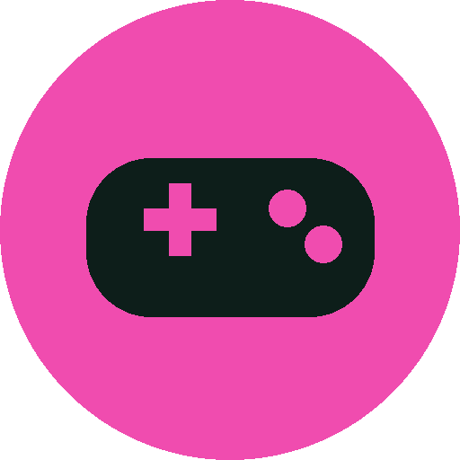

Honest, review-style guides to 450 free browser games, so you can pick something worth your break and still get back to the reading on time.
Retro-Bowl-66 hosts 450 free browser games, and every one of them comes with a written guide in the style of a short review. The reasoning is simple. A break between classes or study sessions is short, and nobody wants to spend half of it loading a game that turns out to be dull. Each guide tells you how the game plays, what to do in the first few minutes, where it gets interesting and where it falls flat, so you can decide before you press play.
We try to be fair about it. Plenty of browser games have a clever idea and a clumsy interface, or a great first level and a repetitive tenth one. The verdicts say so. A game does not need to be perfect to earn fifteen minutes, but you should know what you are getting.
The library is split into four shelves. They are broad on purpose, and the search box above the grid is the quickest way to find a specific title.
Every game page has a play button, plus buttons for fullscreen and for opening the game in a new tab. Below the game sits the guide. It starts with a gameplay overview, then a short beginner's checklist, the controls, strategy notes for when you want to improve, and a final verdict that weighs strengths against weaknesses. A small details box lists the developer, genre and release information where we have it.
The verdicts are opinions, not scores. We would rather tell you that a racing game handles well but runs out of tracks quickly than hand it a number that hides both facts.
A game can be a good reset after an hour of reading, or it can quietly eat the evening. A few habits keep it on the right side of that line.
All the games run in your browser, but some are heavier than others. 3D driving games and physics-based titles ask more of your device than a puzzle or a card game. If something stutters, try these steps first.
Yes. Every game on Retro-Bowl-66 can be played without paying. The site is supported by advertising, which is why you will see ads around the games and guides.
No. There are no accounts on the site and nothing to install. Games load in the page and play in a standard modern browser.
The games are made and hosted by independent studios and developers. We write the guides and organize the library, but the games themselves belong to their creators.
That depends on the game. Many store progress in your browser's local storage, so it stays on that device. Clearing your browsing data or switching devices will usually start you over.
Many games work on touch screens, but not all of them. Games built around a keyboard or mouse can be awkward on a phone. The controls list on each game page shows what input the game expects, so check it before you start.
Use the contact page and include the game's name or page address. We look into reports and fix, update or remove games that no longer work.